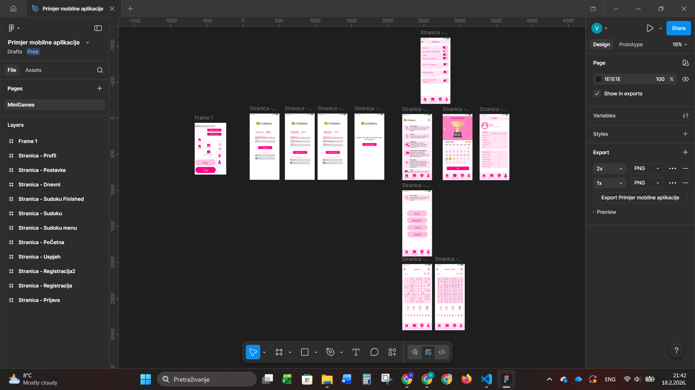
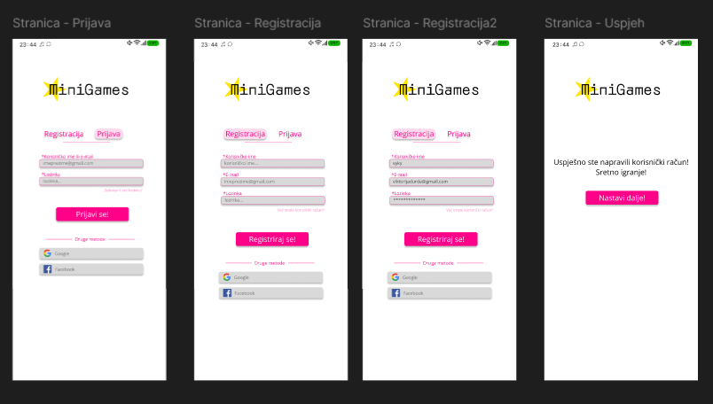
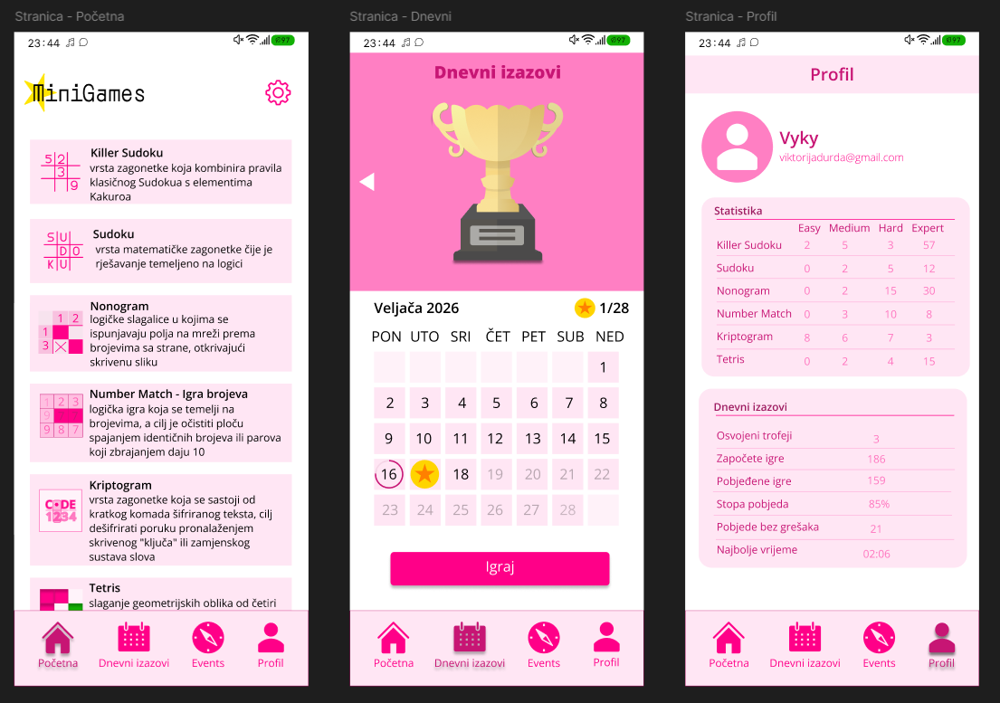
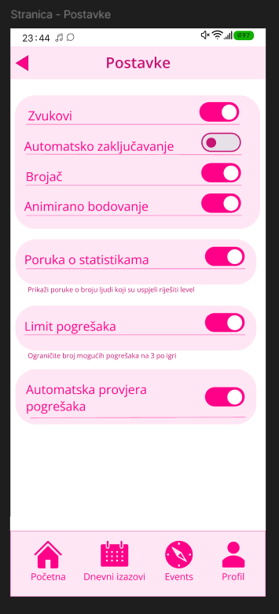
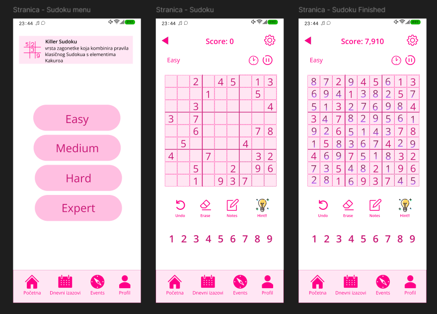

Figma

Figma je web aplikacija za kolaborativno dizajniranje korisničkih sučelja. Usjmerena je na dizajn korisničkog sučelja i korisničkog iskustva. a naglaskom na suradnju u stvrnom vremenu koristeći razne alate za uređivanje vektorske grafike i izradu prototipa.
Figma korisnicima omogućuje dizajna u tri različita načina: način dizajniranja, način prototipa i developer (dev) mode.
Način dizajniranja omogućuje korisnicima crtanje oblika, okvira i komponenti, primjenu stilova i mijenjanje slojeva za organiziranje platna.
Način prototipa stvara interaktivne tokove između okvira i zaslona tako da korisnici mogu testirati UX, povezivati okvire za simulaciju navigacije i postavljati interakcije poput "On click" ili "While hovering".
Dev mode omogućuje korisnicima pregled elemenata za isječke koda, preuzimanje resursa označenih za izvoz, pregled varijabli i tokena te jednostavan pregled dimenzija.

Moj projekt
Za moj projekt odlučila sam se za primjer mobilne aplikacije. Obožavam Sudoku i ostale tipove logičnih igra, pa je moj primjer apllikacije izmišljene kompanije 'MiniGames' koja sadrži više tipova logičnih igra.
Na vrhu sam napravila da se vidi vrijeme, notifikacije, postotak baterije i internet kao da je pravi mobitel.
Također sam dizajnirala jednostavan logo izmišljene kompanije 'MiniGames'.
Registracija i prijava

Prvi stranica koja se vidi je prijava korisnika. Korisnik se može prijaviti pomoću postojećeg korisničkog imena ili maila, te lozinke. Ispod se može vidjeti pitanje 'Zaboravili ste lozinku?' koje promjeni boju kada se preko njega pređe mišom.
Ispod gumba 'Prijavi se' (koji također mijenja boju prelazom miša preko njega) nalaze se druge metode prijave, poput Googlea i Facebooka.
Zatim se prjelazi na stranicu registracije gdje je potrebno unijeti korisničko ime, e-mail i lozinku. Ispod se nalazi pitanje 'Imate li već korisnički račun?' koje također mijenja boju kada se preko njega pređe mišom.
Klikom na polje za unos korisničkog imena, učitava se prijmer unošeni podatak. Klikom na gumb 'Registriraj se' prenosi se stranicu gdje se potvrđuje novo napravljeni račun.
Untar aplikacije

Na dnu se nalazi navigacijska traka koja omogućuje korisniku navigaciju između početne stranice, dnevnih izazova, 'Events' i profila.
Početna stranica aplikacije sadrži glavne igre koje korisnik može odabrati. Sastrane se nalaze ikone igara koje korisnik može odabrati. Pored svake ikone je naziv i opis igre. Na vrhu se nalazi logo kompanije i ikona za postavke.
Dnevni izazovi je dio aplikacije gdje se svaki dan za svaki mjesec nalaze novi izazovi. Uspješno završena igra daje korisniku jednu zvjedzdicu, nakon sakupljenja svih zvjezdica u mjesecu korisnik dobiva trofej.
Na profilu korisnika se nalaze informacije o korisniku (korisničko ime, mail i profilna slika), statistika o uspješno završenim igrama i dnevnim izazovima.

Na stranici postavki korisnik može mjenjati postavke za bolje iskustvo igranja, popout zvuka, automatskog zaključavanja, brojač tijekom igre, animirano bodovanje, poruka o statistikama, limit pogrešaka i automatska provjera pogrešaka.

Na primjeru Sudoku igre, korisnik može odabrati između tri razine težine: Easy, Medium i Hard. Na vrhu se nalazi teškoća igre, ikona za postavke, brojač i ikona za pauzu. Na dnu gumb za poništavanje, izbrisavanje, bilješke, 'Hint' i brojevi za igranje Sudoka.
Klikom na 'Hint' igra se kompletno završi (sa točnim rješenjem!).